01 Café en grano
Maestro.
Una gama para quienes quieren ser maestros del café. Cada referencia tiene su propio carácter.
- Maestro Ecológico
- Maestro Natural
- Maestro Colombia
Distribuciones Valentín Café Mocay
Un universo de café para quienes cuidan cada taza. Descubre las gamas y el servicio profesional que distribuimos para hostelería.
Explorar Mocay
El universo Mocay
Café, infusiones y complementos para construir un servicio completo en tu negocio.
01 Café en grano
Una gama para quienes quieren ser maestros del café. Cada referencia tiene su propio carácter.
02 Café en grano
Distintas referencias para encontrar el café que encaja con la forma de servir de cada barra.
03 Más formas de disfrutarlo
Opciones descafeinadas y cápsulas para distintos momentos del servicio.
04 Complementos
Los elementos que completan la experiencia alrededor de una taza de café.
Catálogo de infusiones
Dos formatos: pirámides en lata y clásicas en caja de bolsitas.
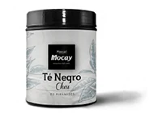
Té negro, canela, jengibre y vainilla. ¡Haz la maleta, te invito a Oriente!
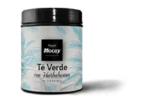
Té verde, hierbabuena. Vente, ¡escapémonos a Marruecos!
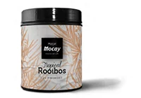
Rooibos con plátano, coco y piña. Sin teína. ¿Me tomas frío o caliente?
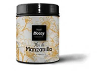
Flor de manzanilla de amarillo intenso. Sin teína. Mírame y dime cómo te sientes.
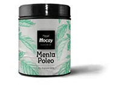
Menta poleo. Sin teína. ¿Me das un abrazo después de comer?
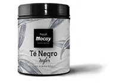
Té negro. Tómame frío, con leche o ¡desayuna conmigo en Londres!
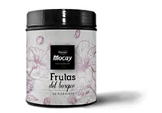
Bayas, arándanos, flor de hibisco. Sin teína. ¿Me tomas frío? Dame la mano, ¡paseemos por el bosque!
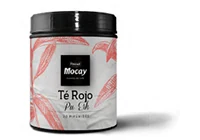
Té rojo Pu-Erh. ¿Con leche? ¿Sabes? Contigo al fin del mundo…
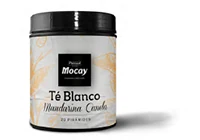
Té blanco, regaliz, mandarina, papaya. ¡Acompáñame al sol, mar y palmeras!
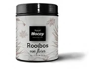
Rooibos traído directamente de las plantaciones de Sudáfrica, de color rojizo y hebras largas.
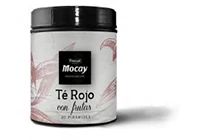
Té rojo Pu-Erh con manzana, fresa, kiwi. ¿Me tomarás con leche?
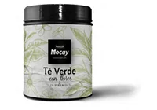
Té verde, pétalos de rosa. Cierra los ojos y ¡llévame una tarde por París!
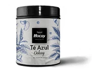
Digestivo, relajante y refrescante.
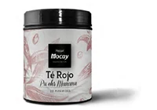
Té rojo Pu-Erh. ¿Con leche? ¿Sabes? Contigo al fin del mundo…
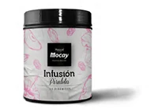
Mezcla de frutas y pasas para todos los paladares.
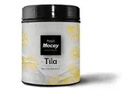
Tila. Sin teína. Relájate, cierra los ojos y ¡disfruta!
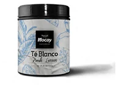
Sabor suave, fresco y cítrico.
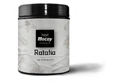
Regaliz, anís y canela, para tomar en frío o caliente.
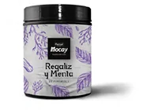
Regaliz y menta para calmar tu interior.
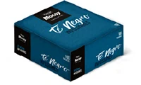
Caja 100 uds. (25x4). Intenso aroma y conocido por sus propiedades tonificantes y diuréticas.
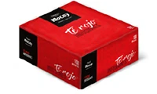
Caja 100 uds. (25x4). Favorece la eliminación natural de toxinas, evitando la retención de líquidos.
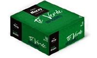
Caja 100 uds. (25x4). De rico sabor y agradable aroma es la máxima expresión de las plantas terapéuticas.
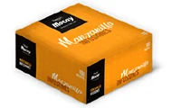
Caja 100 uds. (25x4). Tradicional bebida de sabor suave y ligero. Muy útil para digestiones pesadas.
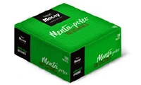
Caja 100 uds. (25x4). Bebida aromática con efectos saludables y de sabor refrescante.
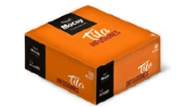
Caja 100 uds. (25x4). Infusión de efecto tranquilizante indicada para trastornos del sueño.

Servicio para hostelería
El servicio profesional de Mocay abarca maquinaria, mantenimiento y asesoramiento para tu negocio.
Distribuciones Valentín × Mocay
Cuéntanos qué necesita tu barra. Te ayudamos a encontrar la gama y el servicio adecuados.
Solicitar información